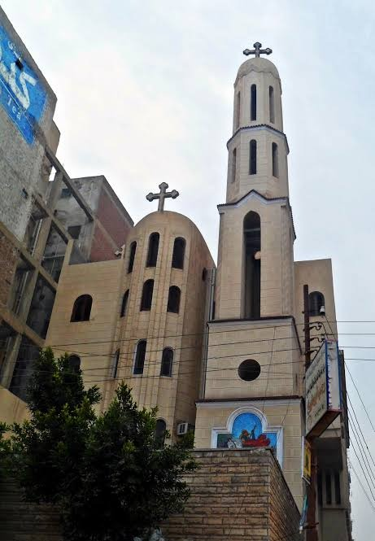

مصر القديمه
و هنا سوف نلقي الضوء علي عدد من كنائس المنطقه و هم
كنيسه الشهيدين سرجيوس و اخس ( ابي سرجه )
كنيسه مارمينا الزهراء
كنيسه الملاك ميخائيل
كنيسه العزراء ببابليون
مزار ابونا مينا عبود
الكنيسه المعلقه
كنيسه القديس مارجرجس
كنيسه مارمينا
كنيسه الشهيدين اباكير و يوحنا
كنيسه القديس يوسف النجار
. كنيسه الشهيدين سرجيوس و اخس ( ابي سرجه )
بعد أن وصلت العائلة المقدسة المنطقة المعروفة ببابليون مصرالقديمة هناك سكنوا المغارة التى توجد الآن بكنيسة أبى سرجة الأثرية المعروفة بإسم الشهيدين سرجيوس وواخس.
( كنيسه ابي سرجه من الداخل )
المغارة وهى من أقدس الأماكن فى كنيسة أبى سرجة الأثرية لما لها من ذكريات رائعة تثيـر إهتمـام السياح وتهافتهم على زيارتها، وذلك لما تحمله من أن العائلة المقدسة قد إلتجأت إليها عند مجيئهـا إلى أرض مصر مما جعل جعل لهذا المكان طابعاً قدسيا.


هذه المغارة المقدسة عبارة عن كنيسة صغيرة تحت الأرض أسفل منتصف مكان المرتلين وجزء مـن هيكل الكنيسة، والوصول إلى المغارة المقدسة من ناحيتين بدرجات سلالم أحدهما من صـالة الهيكـل الجنوبى من الكنيسة، والآخر من وسط الصالة التى فى الهيكل الشمالى.
يبلغ طول المغارة المقدسة حوالى ٢٠ قدماً وعرضها ١٥ قدماً وليست بها نوافـذ، وتـنخفض عـن أرضية كنيسة أبى سرجة بما لا تقل عن ٢١ قدماً، كما أن أرضية الكنيسـة نفسـها تـنخفض عـن مستوى الشارع بحوالى ١٣ قدما.
يرجع تاريخ بناء الكنيسة إلى أواخر القرن الرابع وأوائل القرن الخامس الميلادى وهى تعلو المغـارة التى أقامت فيها العائلة المقدسة و قد تهدمت فيما بعد ولكن تم ترميمها.
( السلالم المؤديه الي المغاره المقدسه )
يحتفظ المتحف القبطى ببعض آثار هامة من كنيسة أبى سرجة ومنها أقدم مذبح خشبى مـن الجـوز عرف فى تاريخ الكنائس القديمة وكذلك تيجان كورونثية ويرجع تاريخها غالباً إلى القـرن السـادس الميلادى.
مدة إقامة العائلة المقدسة فى المغارة
يبدو أن العائلة المقدسة لم تستطيع البقاء فى بابليون مصرإلا أياماً قلائل لا تزيد عن أسبوع نظراً لأن الأوثان هناك تحطمت بحضرة رب المجد يسوع المسيح له المجد الذى قال لوالدته سيكون هنا بيعة حسنة على إسمك وتكون محصاً للزائرين وميناً للخلاص وهى باقية إلى يومنا هذا وتعرف بإسـم أبى سرجة. تعتبر المغارة مزاراً هاماً للمصريين وللأجانب نظراً لأهميتها المقدسة. يوجد بجانب المغارة وداخل الهيكل البحرى بئر ماء قديم.

كنيسه مارمينا الزهراء

كنيسه الملاك ميخائيل
الأيقونات الأثرية:
أيقونة في الهيكل لهارون الكاهن، وأخرى لزكريا الكاهن.
أيقونة أثرية في حضن الآب للسيد المسيح.
أيقونة للعذراء على رأسها تاج يعلوه طائر أبيض بالمقصورة بالحبشية.

كنيسه العذراء ببابليون
احتل العديد من البطاركة الأقباط كنيسة السيدة العذراء في بابليون الدرج من القرن الحادي عشر إلى القرن الخامس عشر، ودُفن سبعة منهم في الكنيسة وكان من بينهم البابا زكريا ، كما كان للكنيسه شان كبير نظرا لمرور العائله المقدسه فيها ، كما تحتوي علي اثار من رفات القديسه دميانه و القديس سمعان الخراز

مزار ابونا مينا عبود
الشهيد القس مينا عبود راعى مارمينا بالعريش، شهيد الكنيسة القبطية الأرثوذكسية، الذى تم اغتياله منذ 8 أعوام، على يد الجماعات الإرهابية بسيناء، عقب عزل الرئيس الأسبق محمد مرسي. وولد القس مينا عبود، في أسوان، يوم 16 سبتمبر 1974
و تم انشاء مزار ابونا مينا عبود في مصر القديمه الذي يعد من اهم الاماكن لدي الزوار

الكنيسه المعلقه
سميت باسم المعلقه لانها بنيت علي برجين من الابراج القديمه للحصن ، جددت الكنيسة عدة مرات خلال العصر الإسلامي مرة في خلافة هارون الرشيد حينما طلب البطريرك الأنبا مرقس من الوالي الإذن بتجديد الكنيسة ، وقد دفن بها عدد من البطاركة في القرنين الحادي عشر والثاني عشر، ولا تزال توجد لهم صور وأيقونات بالكنيسة تضاء لها الشموع، وكانت تقام بها محاكمات الكهنة، والأساقفة، ومحاكمات المهرطقين فيها أيضا، وتعتبر مزارا هاما للـأقباط، نظرا لقدمها التاريخي، وارتباط المكان بالعائلة المقدسة، ووجودها بين كنائس و اديره كثيره مما يسهل زيارتها

كنيسه القديس مارجرجس
هي كنيسه تحاكي بيت لحم في فلسطين ، "مارجرجس".. كنيسة أنشأها أحد أثرياء العصر المسيحي المبكر يُدعي "اثناسيوس"، وذلك في عام 684 ميلادية، سُميت بهذا الإسم نسبة إلى القديس مارجرجس، والذي ولد في النصف الأول من القرن الثالث الميلادي، من أبوين مسيحيين، من سلالة الملوك والأثرياء، فهو ابن الأمير أناسطاسيوس.
يوجد أيضا أيقونة نادرة للسيدة مريم سُميت بـ"عذراء القاهرة"، بعدما كانت تُعرف بـ"عذراء أثينا"، وأيقونات من الخشب المغطى بالقطيفة يوجد بها رفات القديسين القدماء من بينهم رفات مارجرجس، ما جعل من الكنيسة مقصدا للكثير من الزوار

كنيسه مارمينا
كنيسة مار مينا مصنفة في موقع التراث العالمي لليونسكو باسم مار مينا كأحد أفضل العناصر المعمارية المعروفة بعد أن تم تأسيسها في القرن السادس، فهي أيضًا واحدة من أقدم الكنائس في مصر ، كانت رفات مارمينا محفوظة في السابق في هذه الكنيسة، ولكن تم نقل معظم هذه الرفات إلى دير مار مينا الشهير بمريوط.

كنيسه الشهيدين اباكير و يوحنا
قديسين شاهدو العديد من التعزيب حتي انتهي بهم المطاف الي بتر رؤسهم ، تم اخذ اجسادهم ووضعها في كنيسه مارمرقس الي ان تم بناء كنيسه تحمل اسمهم و تم نقل اجسادهم فيها ، كما تحتوي الكنيسه علي قطع اثريا و صحون و ملاعق مرصعه بالفضه كانت مخصصه للخدمه ، ولقد أقيمت الكنيسة علي أنقاض معبد وثني كبير يعرف بأسم "معبد إيزيس المعالجة " ولقد ظهرت عجائب كثيرة من أجسادهم في هذه المنطقه.

كنيسه القديس يوسف النجار
تحتفل الكنيسه الارثوكسيه بعيد القديس يوسف النجار قبل بدء صوم السيده العذراء باسبوع و قد يدت له كنيسه على اسم القديس يوسف النجار في مصر القديمة. بالقاهرة